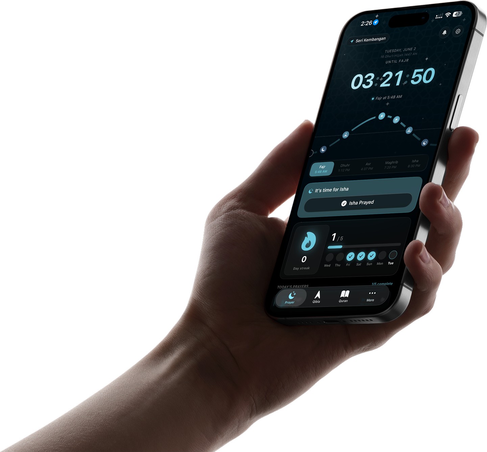
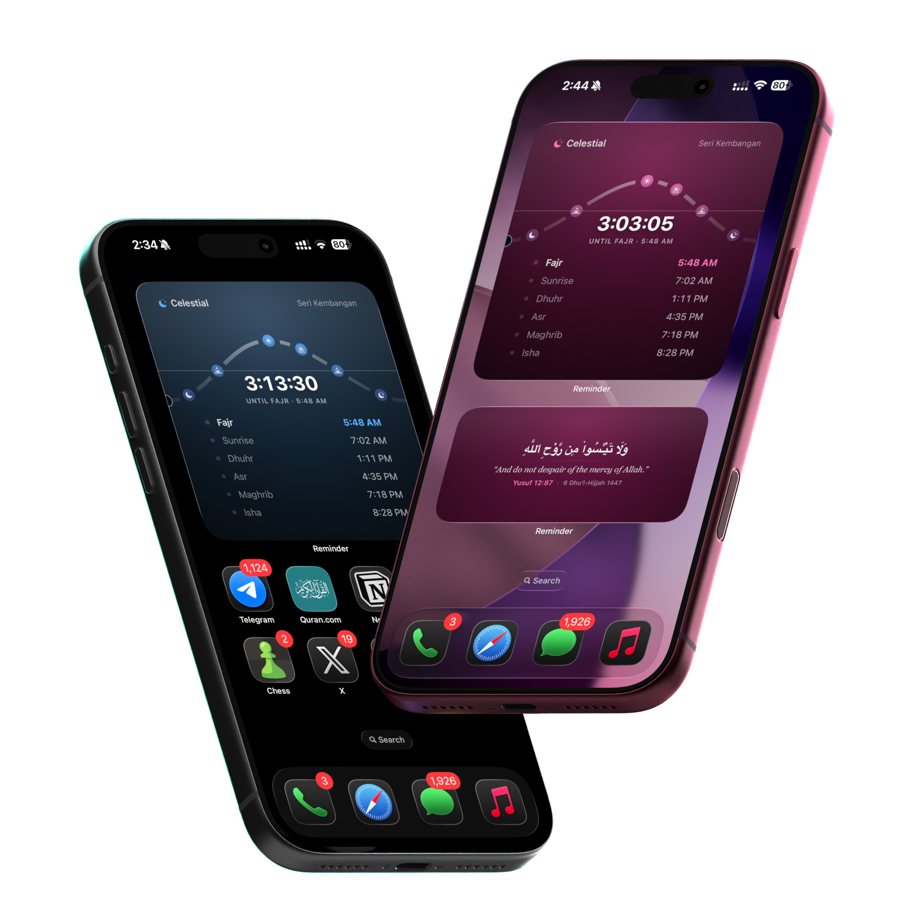
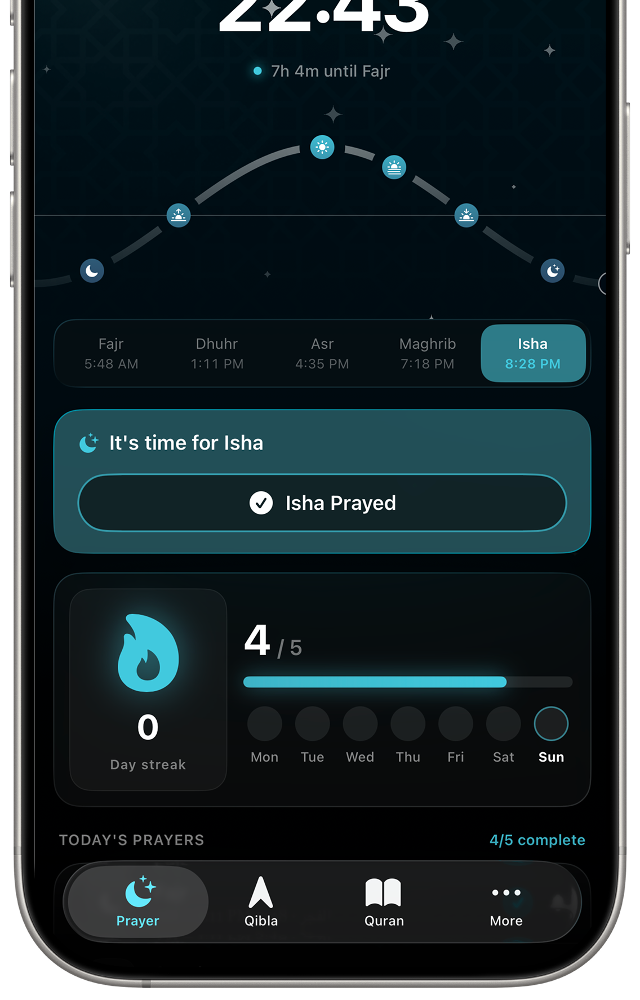
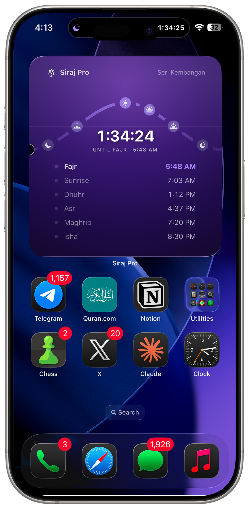
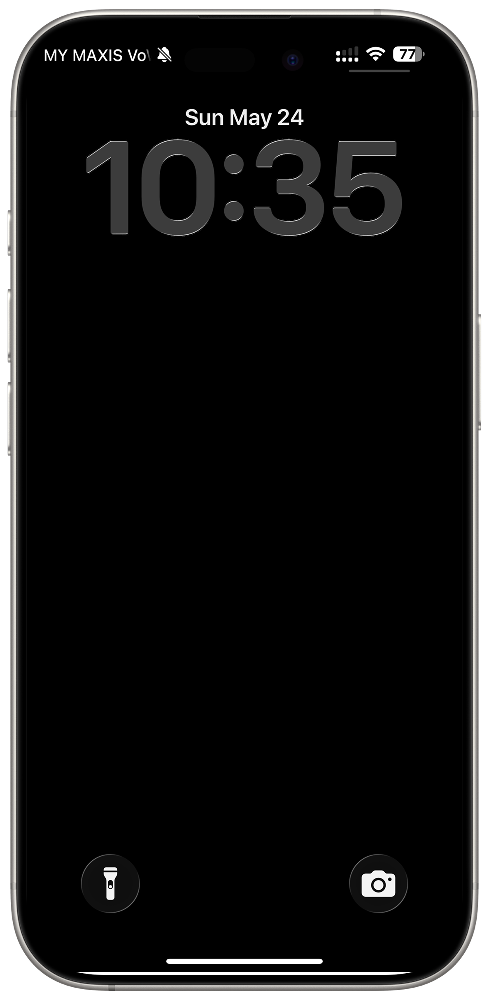
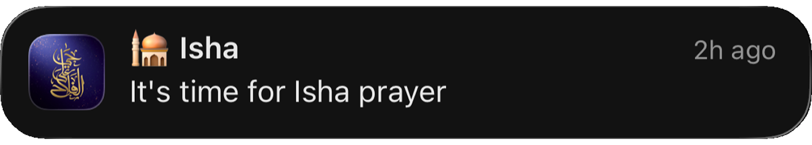
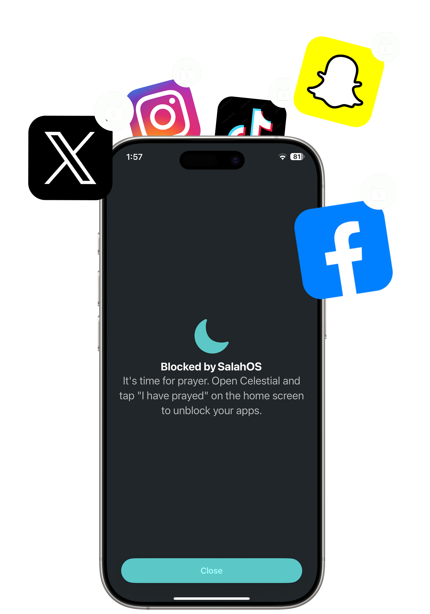
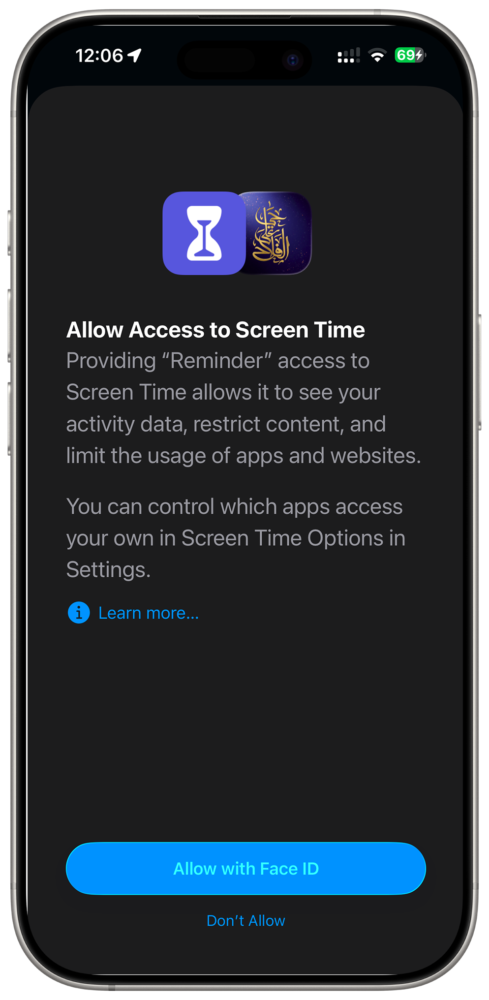

Become a better Muslim with Siraj Pro. Accurate prayer times, a beautiful Qibla compass, smart widgets, and the gentle nudge that keeps you consistent — all in one calm, modern app.

Five reminders a day, calculated from your exact location with the major worldwide methods — Muslim World League, ISNA, Egyptian, Umm al‑Qura, and Karachi. Plus the tools to help you stay consistent.

Most users hit a consistent week within 21 days. Siraj Pro tracks every tick, lights up your streak, and shows the week at a glance — so the days you nail it pile up, visibly.

Small, medium and large — every widget renders the same elegant sun arc the app does, with full prayer-list overviews when you want them. Pick a theme and it follows you everywhere.

The right tone at the right time — silent, vibrate, or the soft sound of the Adhan. Scheduled by iOS locally on your device so a reminder still fires when you're offline.


Distracting apps gently lock when it's time to pray, and unlock the moment you tap "I have prayed." You pick the apps. You pick the prayers. iOS Family Controls does the rest.

The App Blocker uses Apple's official Family Controls framework. Siraj Pro never sees the apps on your device — and your location, your prayer history, your settings all stay on your phone. We don't run servers that hold your data.

Designed to feel calm, modern, and built for the rhythm of your day.
A precision compass that gently taps when you've aligned with the Kaaba. No need to keep staring at the screen.
Your next prayer countdown, always on the Lock Screen and Dynamic Island. Updates in real-time.
A single Quran verse every morning. Arabic, English translation, and the calm to receive it before the day begins.
A tactile tasbih at your thumb. Haptic feedback on every tap, running totals across sessions.
Live Activity ends the moment a prayer window passes — no stale countdowns clogging your Lock Screen.
Uses Apple's Liquid Glass natively — translucency, specular highlights, and the morph behavior baked in.
Pick a palette below — the widget recolors instantly. Your widgets and Live Activity follow the theme you choose; the app itself stays in its calm teal.
Core prayer times are free, forever. Unlock Live Activity, widget themes, and the App Blocker with Siraj Pro.
Auto-renewable. Cancel anytime in Settings → Apple ID → Subscriptions. See our Terms of Use and Privacy Policy.
Siraj Pro is in final review with Apple. Drop us a note and we'll email you the moment it lands on the App Store.